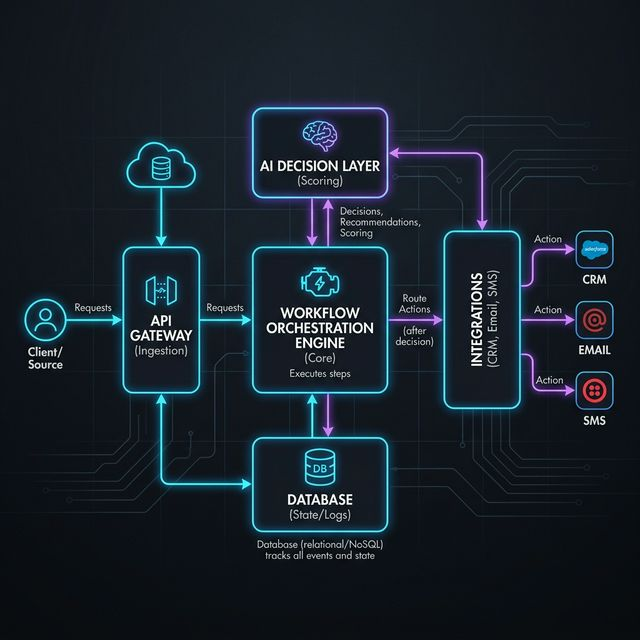
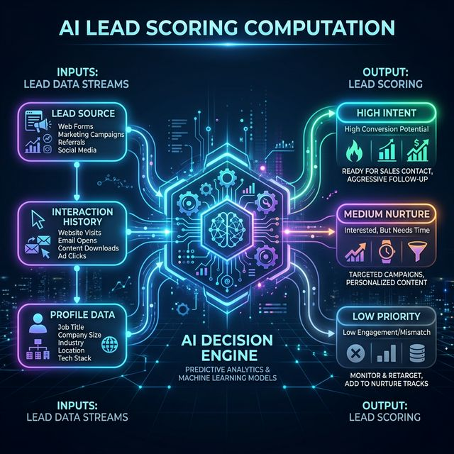
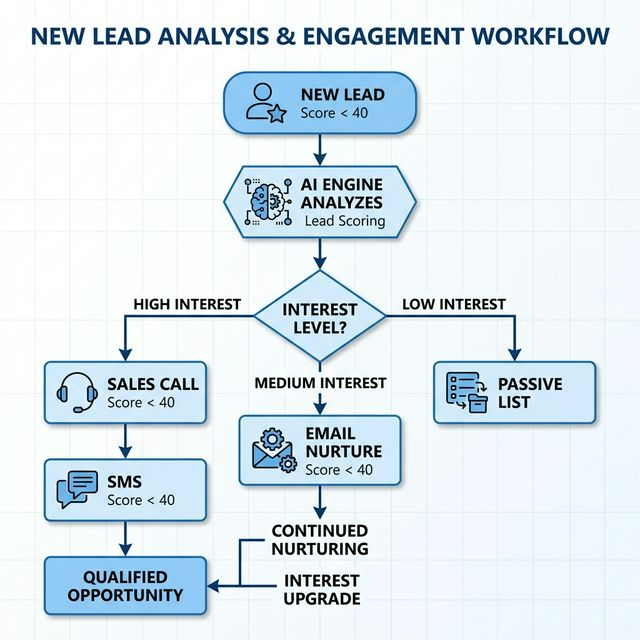

Enterprise Automation Powered by AI
Designed for Scale | Cross-Platform | Dynamic Orchestration
Microservices approach providing high availability and modular integration.


How a single event maps to final actions based on AI scores:

| Domain | Technology Choice | Justification |
|---|---|---|
| Backend Core | Node.js (Express) | Non-blocking I/O for massive webhook payloads |
| Queue/Broker | Redis (BullMQ) | Async execution guarantees, no thread blocking |
| Decision Logic | Python/Scikit-Learn API | Industry standard for predictive matrix scoring |
| Database Storage | PostgreSQL | ACID compliance required for rigid CRM state |